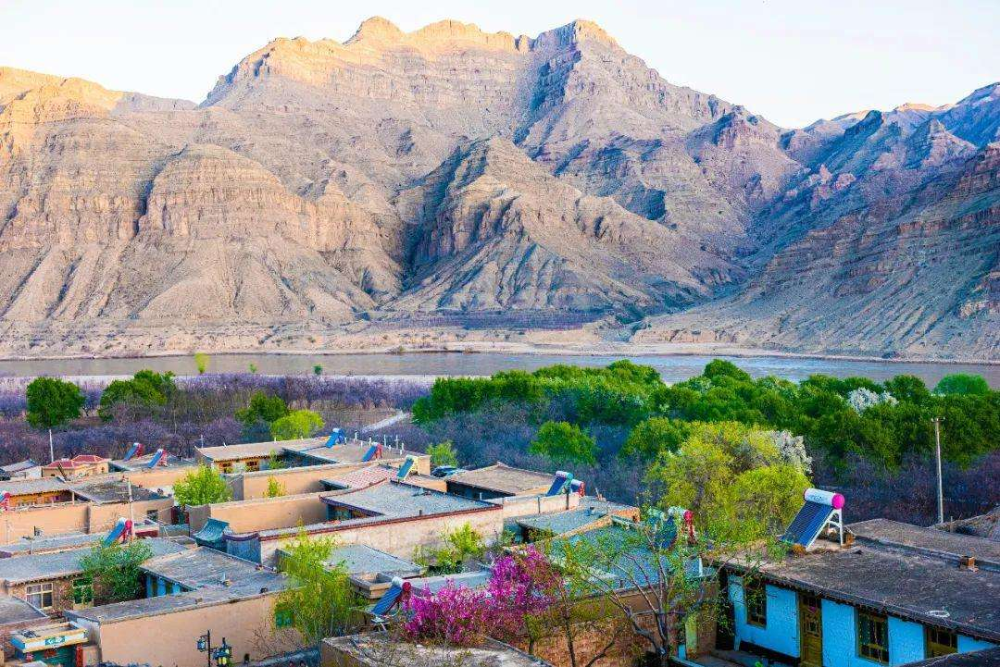
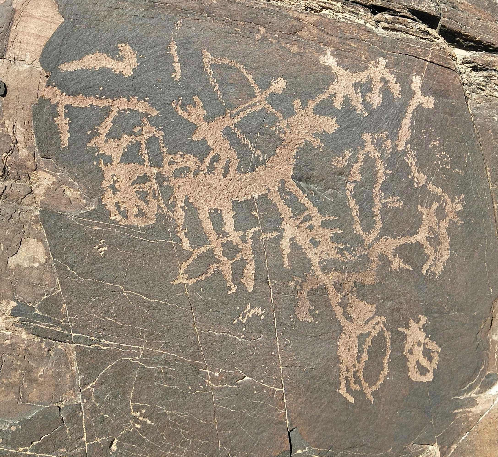
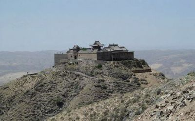
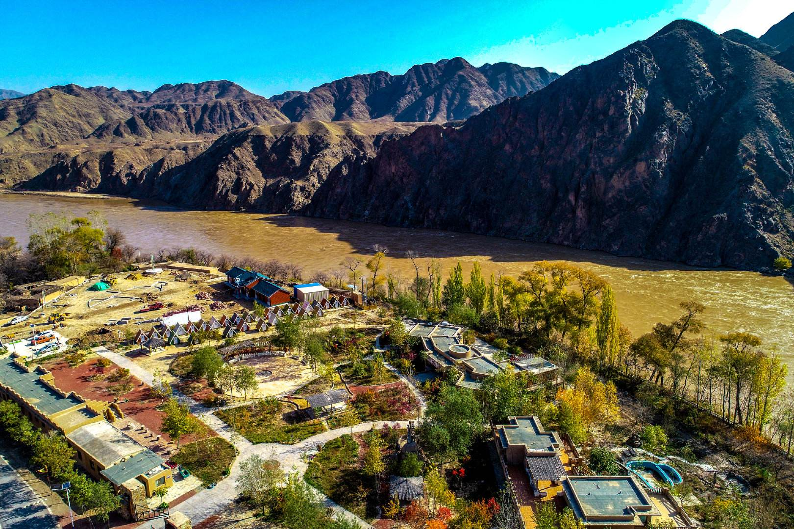

南长滩
南长滩村被国家有关部门确定为宁夏首个 "全国历史文化名村"。沙坡头旅游公司副总经理杨富国告诉记者，南长滩村历史悠久，文化底蕴丰厚。公元1227年，蒙古人的铁骑踏破贺兰山阙，西夏国灭亡。因此，一部分党项人逃到青海湟水，与汉人和其他民族融合。其中一部分随遇而安，就地安家。只有极少数党项人无意中逃到南长滩，定居下来。据杨富国介绍，南长滩的建筑风格大多是石头地基，土坯房，底下是牦牛毡;图腾主要以狼、鹰、牦牛为主。
《详细》

大麦地岩画
大麦地岩画位于宁夏回族自治区中卫市，岩画带面积约450平方公里，遗存有史前岩画1万幅以上。在方圆6平方公里的原始环境中遗存岩画个体图像达8532个，平均每平方公里有个体图像1422个，超出了国际公认的世界岩画“主要地区”规定标准的140多倍，堪称世界之最。根据国际上通用的丽石黄衣测年，岩画专家测得大麦地岩画早期距今13000到10000年，中期距今约10000年到4000年，最早的岩画在旧石器时代至新石器时代之间。
《详细》

中卫老君台
老君台位于中卫常乐镇境内的兴隆山上，古称“兴隆山老君台全真观”，20世纪90年代初恢复重建时，因将临近的“太清山宏佛寺”一并纳入老君台寺庙范围内，按原址原貌重修，故合名为“太清山老君台全真观”。

北长滩
北长滩位于国家5A级旅游区沙坡头的上游30公里处，因历史悠久、北方土木结构的传统建筑、军事防御和原始古朴生态于一体而被评为宁夏首批“全国历史文化名村”，是中卫旅游优先发展战略中“一核两带”中的重要节点之一。

中卫鼓楼
中卫鼓楼位居城市正中，清初名曰文昌阁，基座四面门楼上有匾额，是按方位反映中卫地理形胜的，其东曰“锁扼青铜”；南曰“对峙香岩”；西曰“爽挹沙山”；北匾原为“控制边夷”。